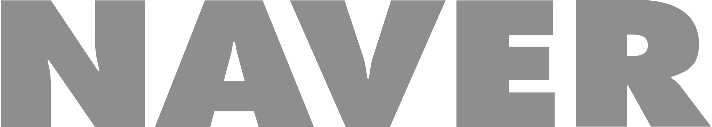

"Hello! Sharing world"
CREATIVE COMMONS
GLOBAL SUMMIT
2015
A joyful celebration believing in the value of the openness and sharing creating a positive change with people from over 80 contries is taking place in October. in Korea.
2015.10.15(THU) ~ 16(FRI)
@ National Musem of Korea, Art Center Nabi and more
Main Program
Lecture
Listen to the speakers from various countries about the messeges of sharing and opening.
CC Exhibition
Appreciate various creations applying CC license of artists, organized from Art Center Nabi.
Forum
Have the time to share your thoughts and opinions with experts for each topic.
Workshop
Try creating your own work using open source license rather than just watching at it.
CC Ignite
Get opportunities to network with CC affiliates around the world, also after the summit.
Featured Speakers

Yoachai Benkler
Bekman Professor of Enterpreneurial Legol Studies at Harverd Low School
Benkler studies commons-based peer production, and published his seminal book The Wealth of Network in 2006.

SohYeong Noh
Director of Art Center Nabi and a board member of CC Korea
As the main venue for new media art production in Korea, Nabi promotes cross-disciplinary collaboration and understanding among science technology, humanities, and the arts.

Kilnam Chon
Kilnam Chon helped bring the Intenet to Asia and is an outspoken advocate for the open web and digital commons. In 2012, he was inducted into the inaugural class of the Internet Society's (ISOC) Internet Hall of Fame.

Julia Leda
President of Yound Pirates of Europe
European ingetration, political democracy and participation of youth throufh online as her major condem, Rega's report outlining potential changes to EU copyright law was approved by the Peliament in July.

Lila Tretikov
Executive Director of the Wikimedia Foundation
Lila Tertikove is the Executive Director of the Wikimedia Foundation, the nonprofit organization that operates Wikipedia. Wikimedia is freely available in 290 languages and used by nearly half billion people around the world every month.

Ryan Mekley
CEO of Creative Commons,ex COO of the Mozilla Foundation
Ryan had been leading open-source projects at the Mozilla Foundation such as the open source movement.
Partners
- 